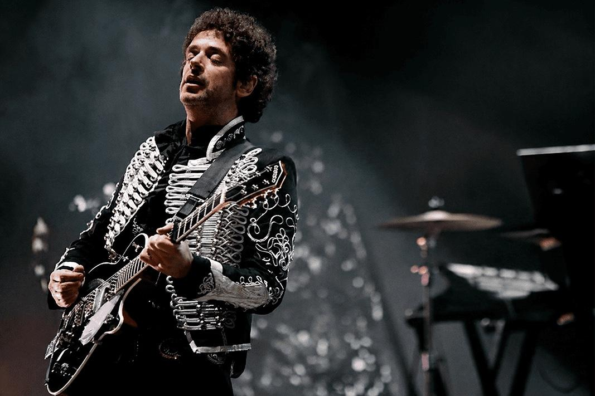
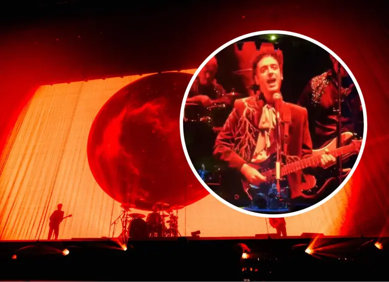
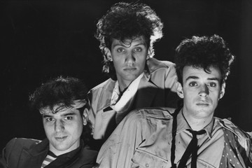

1 de mayo, 2026
Gustavo Cerati, más allá del mito:
Netflix anuncia un documental con acceso a su mundo íntimo e imágenes inéditas.

1 de mayo, 2026
Netflix anuncia un documental con acceso a su mundo íntimo e imágenes inéditas.

22 de marzo, 2026
Por qué es un gran espectáculo y qué opina el público del emotivo recital

21 de marzo, 2026
Así fue el regreso con Tecnología de Soda Stereo
20 de junio, 2026
La banda argentina "revive" a Gustavo Cerati con un avatar digital en la gira 'Ecos'.

8 de noviembre, 2025
Dua Lipa sorprendió con un cover de Soda Stereo, que hizo vibrar el Monumental.

17 de mayo, 2023
El diario inglés The Guardian y su mirada sobre la “más grande banda argentina”